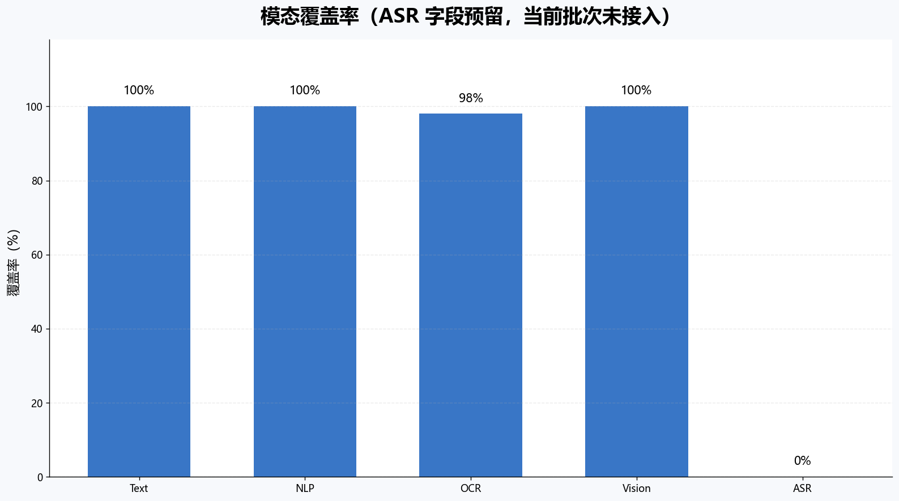
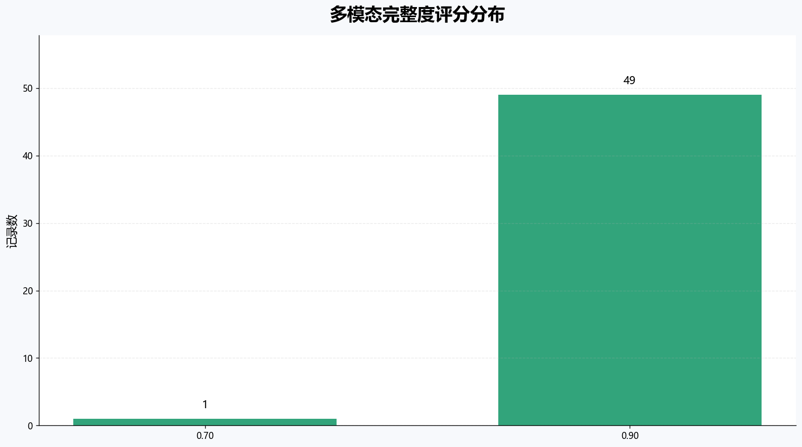
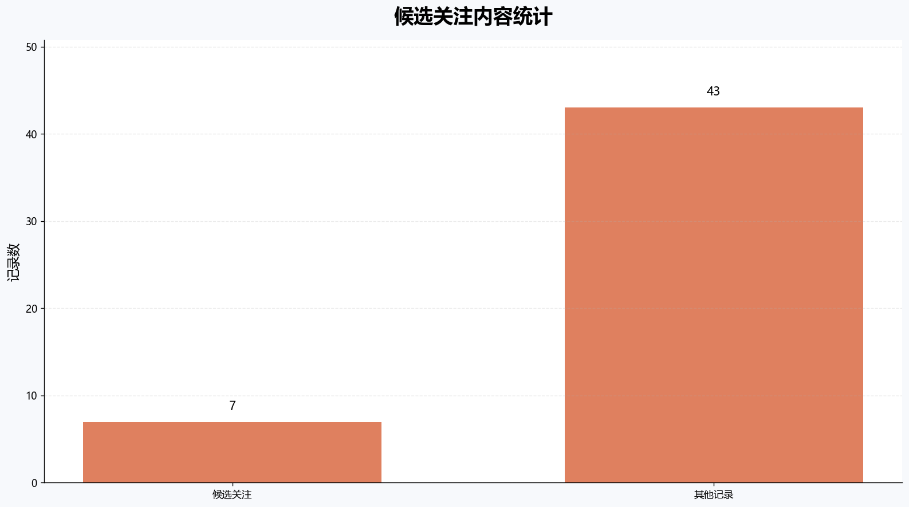
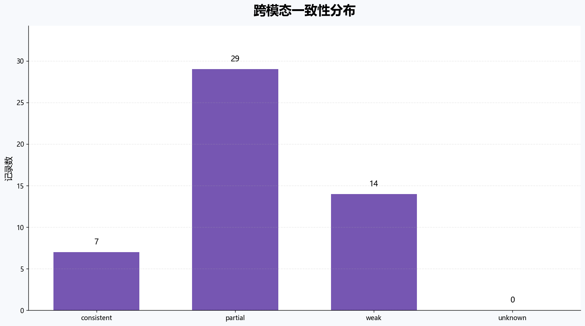

多模态数据融合与分析报告
静态课程设计结果看板
记录数50
平均完整度0.896
已接入模态4
候选关注内容7
ASR 状态待接入
融合统计图表




跨模态补充与一致性分析
OCR 补充信息
48
视觉补充信息
50
图文弱相关
14
OCR 与视觉均补充
48
该分析用于衡量图像侧信息对微博正文的补充价值和粗略一致性，不代表最终
风险判断。
跨模态分析案例：图像侧信息对正文的补充
热搜词：央视曝养生馆围猎老年人
post_id：5308969155298302
多模态证据
微博正文摘要
央视报道北京多家养生馆以低价体验吸引老年人，再通过虚假诊断和 所谓排毒项目实施诈骗，警方已刑拘30余名嫌疑人。
OCR 补充信息
视频画面识别出央视新闻标识、养生项目价目表、护理项目价格，以及 “北京警方捣毁20余家套路养生馆”等新闻字幕。
视觉语义补充
媒体被识别为新闻报道和视频画面截图，视觉标签集中在社会民生、 财经消费、诈骗及违法犯罪等场景。
跨模态分析结果
综合分析输出
一致性判断：
正文、OCR 和视觉语义围绕“养生馆诈骗”同一事件展开，属于
partial，即主题相关但图像侧提供额外信息。
补充价值：
OCR 补充了新闻字幕、项目价目表和警方行动信息；视觉语义补充了
新闻报道、社会民生、诈骗违法场景。
后续用途：
该结果可作为内容安全候选分析中的证据组织结果，供人工核查或
后续模型进一步判断。
分析结论
正文描述养生馆诈骗事件，OCR 从视频画面中补充了新闻字幕、项目价目表和 警方行动信息，视觉语义进一步识别出新闻报道、社会民生和诈骗场景。 图像侧信息与正文主题部分一致，同时提供了正文之外的证据细节，因此该 样例体现了多模态分析相较单文本分析的补充价值。
正文描述养生馆诈骗事件，OCR 从视频画面中补充了新闻字幕、项目价目表和 警方行动信息，视觉语义进一步识别出新闻报道、社会民生和诈骗场景。 图像侧信息与正文主题部分一致，同时提供了正文之外的证据细节，因此该 样例体现了多模态分析相较单文本分析的补充价值。
单条微博多模态融合样例
热搜词：刘耀文说心疼马嘉祺
post_id：5308967137051181
原始输入与模块输出
微博正文 · post_text
#刘耀文说心疼马嘉祺# 综艺里的关心可以靠话术，但微表情骗不了人。看着哥哥一次次被水泼，刘耀文在旁边坐不住了，不是那种客套的安慰，是实打实的担心，时团这帮孩子的感情，全在这些没剪掉的细节里。#这是我的西游#
OCR 识别文本 · ocr_text
这是我的西游 意料之内 山野为营；快乐随行时代少年窗；贺峻霖；还玩吗继续呗 这是我的西游 雨林秘境时代少年回；这是我的西游；丁程鑫；看这边时代少年园；三二一看这边；第己李时代少年国；宋亚轩；马嘉祺；我很认真地在玩；苏醒；...
视觉语义摘要 · vision_summary
Chinese-CLIP 判断该媒体更接近“普通人物照片”，视觉语义标签偏向：娱乐明星、突发事故；文字较少或无可识别文字。 一句话视觉描述：a man with black hair Chinese-CLIP 判断该媒体...
NLP 分析结果
类别其他情感负面关键词刘耀、文说、马嘉祺、关心、靠话术、但微
融合后的统一记录
该记录将微博正文、OCR识别文本、视觉语义摘要和NLP分析结果统一关联到
同一条微博代表帖，并生成完整度评分和候选关注标记。
代表记录
| topic | post_id | available_modalities | missing_modalities | score | needs_review | review_reasons | 融合文本预览 |
|---|---|---|---|---|---|---|---|
| 鹿晗gapday音乐节 | 5308987190806948 | text, nlp, ocr, vision | asr | 0.9 | True | short_text_with_ocr_or_vision | #鹿晗gapday音乐节#颤抖吧 我老公又要开音乐节了 09 gqpday；apday ANVHIOAV；Ry；Co；G5；GO；GS Jay；不9A；220 GO；69；GS；G5 Chinese-CLIP 判断该媒体更接近“新闻现场照片”，视觉语义标签偏向：娱乐明星；含可识别文字。 一句话视觉描述： |
| 王安宇今天阿普瑞了 | 5308756717998694 | text, nlp, ocr, vision | asr | 0.9 | True | weak_cross_modal_consistency | #王安宇今天阿普瑞了##天猫超级发布##世界路人杯# 王安宇这套阿普瑞穿搭真的戳在我审美上！松弛高级又自在，运动休闲+精致感的平衡感拿捏得刚刚好，普通人通勤约会也能直接抄作业！🍑🔎“天猫超级发布”抢同款尖货，6.12-6.21去上海西岸梦中心玩世界路人杯，还有机会赢十万美加墨之旅！ AOIDAS；OHIGINAL |
| 白鹿学历 | 5308929581254740 | text, nlp, ocr, vision | asr | 0.9 | True | weak_cross_modal_consistency | 近日，网传针对白鹿（本名：白梦妍）女士的“学历造假、番位造假、程序违规申报三级演员”“与他人恋情”“要求更换编剧团队”“与江苏文投相关人员交往甚密”等相关信息均为诽谤。 针对网络上恶意编造、传播针对白鹿女士诽谤信息的涉嫌侵权行为，将依法严肃追究造谣、传谣主体的法律责任，绝不姑息任何侵犯白鹿女士合法权益的行为。 收起d |
ASR 说明
当前 ASR 字段已在统一数据结构中预留，但该批次真实微博视频尚未完成批量
转写，因此 ASR 覆盖率为 0%。该缺失不会影响文本、OCR、视觉语义和 NLP
的现有融合流程。